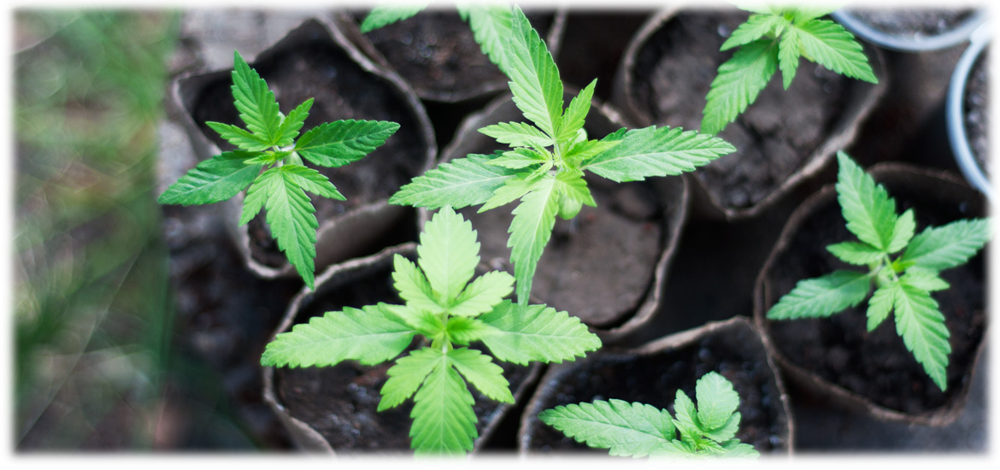
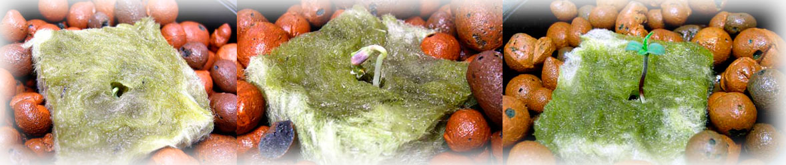

Качественный и достойный урожай начинается с первого шага — правильного проращивания семян. Если этот этап будет пропущен или выполнен некорректно, даже самые дорогие сорта могут не дать всходов или вырасти слабыми. Чтобы прорастить semena марихуаны без потерь, необходимо обеспечить три базовых условия: воду, воздух и тепло.
Процесс пробуждения семени
Прорастание происходит в несколько этапов. Сначала семя впитывает влагу, после чего развивается стержневой корень, который проламывает твердую оболочку. Через несколько дней появляются первые эмбрионные листочки — семядоли.
Важное предупреждение: Сеянец крайне хрупок. Не пытайтесь насильно снять остатки оболочки с семядолей — любое неосторожное движение может сломать росток и погубить растение.
Популярные методы проращивания
Ватные диски / Полотенце

Один из самых надежных методов. Семена кладутся между влажными дисками или салфетками. Позволяет легко контролировать процесс и вовремя заметить появление корешка.
Прямая посадка в грунт
Естественный метод. Семя высаживается на глубину около 3 мм в увлажненную почву. Требует уверенности в качестве семян, так как наблюдать за ростом внутри земли невозможно.
Минеральная вата
Профессиональный метод. Использование специальных блоков из минваты обеспечивает идеальный баланс воздуха и влаги, что гарантирует максимально высокий процент всхожести.
Замачивание в воде
Рекомендуется для старых или пересушенных семян. Замачивание на 24 часа размягчает оболочку, облегчая выход корешка. Важно не передержать, чтобы семя не сгнило.
Секреты успешного старта
Помните: как только семя выпустило корешок, его необходимо пересадить в грунт в кратчайшие сроки. После появления первых листьев обеспечьте растению максимальный доступ к свету для запуска фотосинтеза.

🌿 Готовы к посадке?
Теперь, когда semena проросли, выберите подходящий метод выращивания для вашего случая.
Выбрать метод выращивания